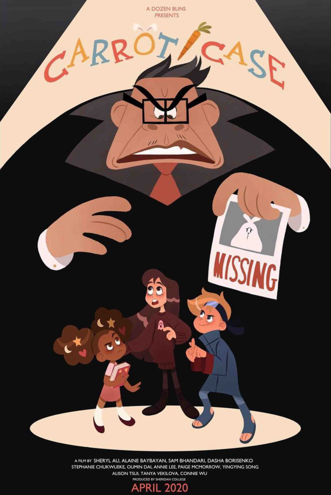
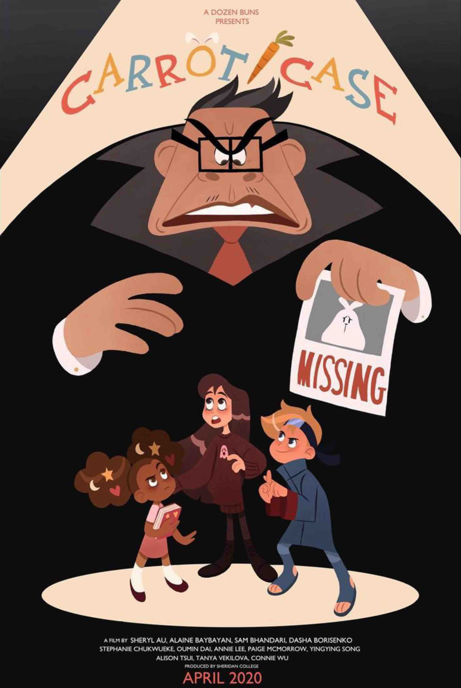

Hi, my name's Jonathan! I'm a Canadian composer, multi-instrumentalist
producer, and classically trained jazz musician of Cantonese and Scottish heritage…
Hi, my name's Jonathan! I'm a Canadian composer, multi-instrumentalist
producer, and classically trained jazz musician of Cantonese and Scottish heritage…
My musical journey began from the age of five, rigorously training in the art of classical
piano and cultivating a keen sense of technicality within the Royal Conservatory of Music. However, during
my rebellious teenage years, my growing impatience with the classical world led me to stumble upon
the improvisatory universe of jazz, thus I became a conservatory drop-out eager to explore new forms of
music.
The following years unfolded into a musical voyage of multicultural discovery: from learning japanese fusion
jazz piano to suddenly picking up finger-style and flamenco guitar; then from learning traditional Chinese
erhu to cooking up hip-hop beats and mastering digital audio production; in other words, I was developing
into a musical polyglot.
As for composition, my journey began in Vancouver at the University of British Columbia. I
initially enrolled to study computer science, however, after joining a Game Development Club, my discovery
of scoring for interactive media prompted my immediate conversion to studying music full-time. I eventually
settled at the University of Lethbridge, a modest school allowing the freedom to rent and learn every
instrument in the orchestra, thus fuelling my multi-instrumentalist addiction and passion for
orchestration.
During my studies, I have continued scoring for award-winning student games and animations
while simultaneously training in concert music under the direction of Dr. Arlan N. Schultz.
After my forty hours of daily music practice, I enjoy climbing rocks, gymnastically tumbling, and
programming machines to do my bidding.
(^-^)


 
